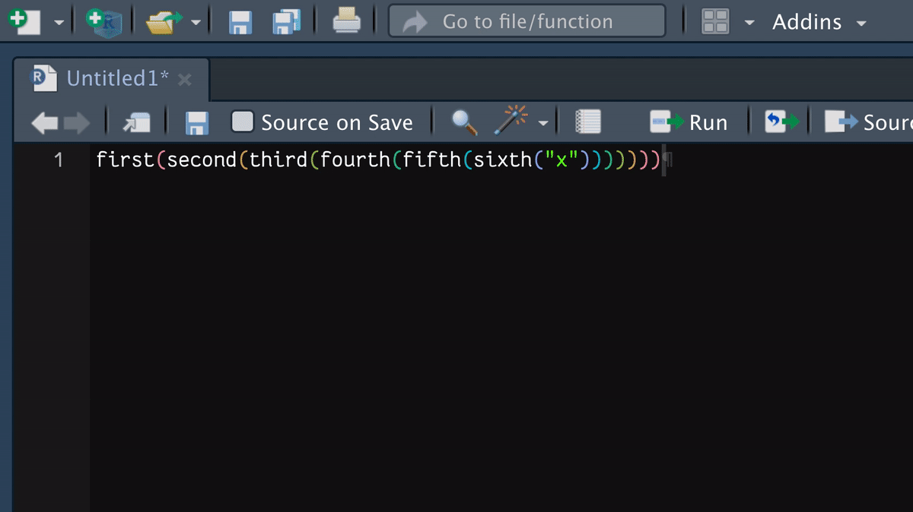
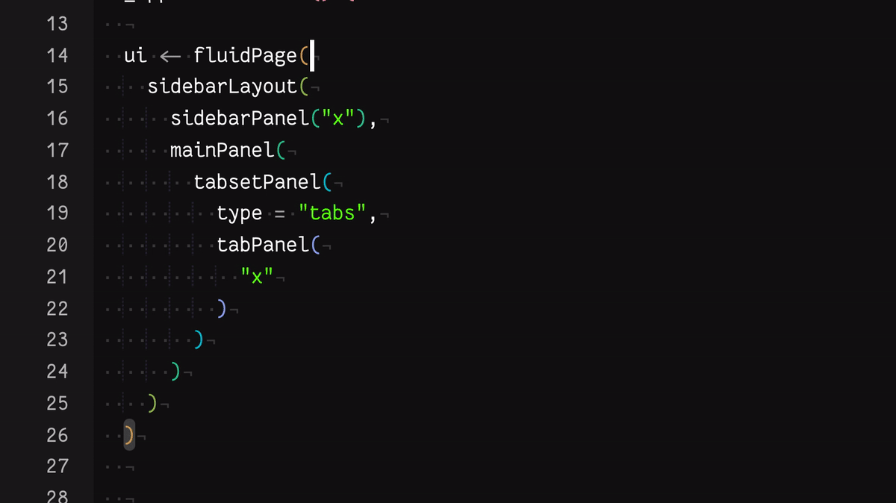

ui <- fluidPage(
"hogwash",
sidebarLayout(
"tripe",
mainPanel(
"piffle",
tabsetPanel(
"bilge",
tabPanel(
"twaddle"
) # tabPanel
) # tabsetPanel
) # mainPanel
) # sidebarLayout
) # fluidPage
tl;dr
I wrote a novelty R function that inserts comments after closing parentheses with the names of the functions they belong to. (These are called biscuits, apparently.) It’s available as an RStudio Addin from the {blogsnip} package.
Matryoshka functions
Shiny apps can involve a lot of nested functions in the UI, which can make them difficult to handle.
Sometimes I comment after a closing parenthesis (‘paren’) with the name of the function that it’s closing, which makes it easier to match the pairs.
Duncan told me these labels are called ‘biscuits’, which is charming.
Ideally you don’t want to write ‘hadouken code’1 like this, though. A well-designed Shiny app would be modular and abstract away the functions, making everything a delight to read and understand.2
Paren in a codestack
There are a few ways that the RStudio IDE can help with the problem of bracket-buddying in long-winded scripts. In particular:
- Put your cursor next to a parenthesis and its partner will be automatically highlighted
- You can auto-indent with Command + I and expose indent guides with Options > Code > Show indent guides so that paren-pairs are aligned vertically
- Colour-match paren-pairs with rainbow colours, which you can activate with Options > Code > Display
- Use the keyboard shortcut Control + P to jump from an opening to a closing parenthesis
You can see these in action in this gif:

These go some way to helping, but each is not perfect for me, personally. For example, as someone with colourblindness, I find the rainbow colouring isn’t distinct enough.
A biscuit recipe
So what if we want to use those closing-paren labels, or ‘biscuits’, instead? There doesn’t seem to be an option in RStudio for that.
Naturally, I wondered about filling that gap in the market.
As a result, consider this post a thought-experiment manifested with some clunky code that is poorly tested and probably doesn’t do exactly what you want it to do. You have been warned.
Easy as A, B, D
Using R code, how can you work out the matching parentheses in an expression? Spoiler: it’s not that simple.
Maybe you could treat an expression as a string, then label the opening and closing parens in forward and reverse order, respectively.
In this example, the labels match up the parens for each imaginary function (uppercase for open-parens and lowercase for closing-parens):
"first(second(third()))"
# A B CcbaBut this simple reversing heuristic doesn’t work for these expressions:
"first(second(third(), fourth()))"
# A B Cd Dcba
"first(second(third(')')))"
# A B C d cbaIn the first example we’d get the parens for third() and fourth() mixed up. In the second we have a sneaky unopened closing paren inside a string.
Not forgetting that this doesn’t solve how to extract each function name to use as the biscuit.
‘Overengineer’ is my middle name
Rather than the naive approach of chopping up and counting strings, I decided to parse the actual R expressions from them.
I created a function to do this, add_biscuits(), that contains sub-functions for three steps:
.parse()to interpret the R code from an input.label()to match parenthesis pairs by their parent function, grab the parent function name and insert it as a comment after the closing paren.format()to stick it all back together and style it
The rest of the post walks through these functions. I’m certain there’s easier ways to do things, but the code here demonstrates the point I’m trying to reach.
For demonstration, we can use one of the trickier examples from above as our input.
string <- "first(second(third('x'), fourth('y')))"1. Parse
The .parse() function takes a string containing R code and returns a dataframe of its ‘syntax tree’. In other words, it breaks the string into ‘tokens’ that are recognised as units of R code: function calls, assignment arrows, etc.
I’ve used getParseData(parse()) to do the hard work of parsing the string into a dataframe with one row per token. The downside is that you must provide to it a file rather than a character object, so we first have to write it to a temporary file.
I’ve then filtered the dataframe to get only the tokens that are R code (i.e. they aren’t spaces) and renumbered the rows so they’re consecutive. This will be useful when we want to extract the function names for each set of parens.
Expand the .parse() function definition
.parse <- function(string) {
file <- tempfile(fileext = ".R")
writeLines(string, file)
tokens <- getParseData(parse(file))
parsed <- parsed[parsed$terminal == TRUE, ]
rownames(parsed) <- as.character(seq(nrow(parsed)))
return(parsed)
}Here’s what the output looks like:
tree <- .parse(string)
tree[, c("line1", "col1", "parent", "token", "text")] line1 col1 parent token text
1 1 1 3 SYMBOL_FUNCTION_CALL first
2 1 6 40 '(' (
3 1 7 6 SYMBOL_FUNCTION_CALL second
4 1 13 35 '(' (
5 1 14 9 SYMBOL_FUNCTION_CALL third
6 1 19 16 '(' (
7 1 20 12 STR_CONST 'x'
8 1 23 16 ')' )
9 1 24 35 ',' ,
10 1 26 23 SYMBOL_FUNCTION_CALL fourth
11 1 32 30 '(' (
12 1 33 26 STR_CONST 'y'
13 1 36 30 ')' )
14 1 37 35 ')' )
15 1 38 40 ')' )So each row is a recognised R token, e.g. the function name from the first() function is a SYMBOL_FUNCTION_CALL and 'x' is a STR_CONSTANT. Parentheses are recognised as separate special tokens too: '(' and ')'.
We also get returned the position of each token in the input (line* and col*) and a variable called parent which tells us something about the association of tokens. In our case, opening- and closing-parens have the same parent value.
2. Label
So we can tie our paren pairs together with the parent variable and we know where to place the biscuit with the line1 and col1 information. But how to extract the function name and ‘biscuitise’ it?
I’ve written the slightly awkward .label() function for this. It takes the output from .parse() and checks each row to see if it’s a closing-paren token; if so, it finds the position of the matching open-paren by parent; then it looks at the text of the token in the preceding row to get the function name and sticks that in a new column called label.
Expand the .label() function definition
.label <- function(tree) {
tree$label <- NA_character_
for (tkn in seq_len(nrow(tree))) {
tree$label[tkn] <- ifelse(
tree$token[[tkn]] == "')'",
tree[as.numeric(rownames(
tree[tree$parent == tree$parent[[tkn]] & tree$token == "'('", ]
)) - 1, "text"],
NA_character_
)
}
return(tree)
}So now we have the required biscuit for each closing paren:
tree_lbl <- .label(tree)
tree_lbl[!is.na(tree_lbl$label), c("text", "label")] text label
8 ) third
13 ) fourth
14 ) second
15 ) first3. Format
The last step needs involves sticking everything back together again. My quick solution is hacky and needs a refactor for sure.
The .format() function does a couple of awkward things: recognises and pastes commas to their preceding token (otherwise we’ll get lines in the output that start with a comma, which is valid, but not my style) and pastes in the biscuits with a suffixed # to mark it as a comment. Of course, this blocks downstream code, so we can add a linebreak with \n.
The output is still going to be a bit uggo though, so I employed {styler} to reformat it in tidyverse style. This is very definitely opinionated.
Expand the .format() function definition
.format <- function(tree_lbl) {
tree_lbl$comma <- c(
ifelse(tree_lbl$text != ",", NA_character_, ",")[-1], NA_character_
) # lag commas
tree_lbl <- tree_lbl[tree_lbl$token != "','", ] # remove comma tokens
tree_lbl$string <- NA_character_
for (tkn in seq_len(nrow(tree_lbl))) {
if (!is.na(tree_lbl$comma[tkn])) { # when there's a comma
if (!is.na(tree_lbl$label[tkn])) { # paste with biscuit
tree_lbl$string[tkn] <- paste0(
"\n", tree_lbl$text[tkn], tree_lbl$comma[tkn],
"#", tree_lbl$label[tkn], "\n"
)
} else if (is.na(tree_lbl$label[tkn])) { # paste without biscuit
tree_lbl$string[tkn] <- paste0(
"\n", tree_lbl$text[tkn], tree_lbl$comma[tkn], "\n"
)
}
} else if (is.na(tree_lbl$comma[tkn]) & !is.na(tree_lbl$label[tkn])) {
tree_lbl$string[tkn] <- paste0(
"\n", tree_lbl$text[tkn], "#", tree_lbl$label[tkn], "\n"
)
} else { # no comma, no biscuit
tree_lbl$string[tkn] <- tree_lbl$text[tkn]
}
}
string_out <- paste0(tree_lbl$string, collapse = "")
string_out <- gsub("\n\n", "\n", string_out)
styled <- suppressWarnings(
utils::capture.output(styler::style_text(string_out))
)
paste(styled, collapse = "\n")
}Let’s hand over to .format() the labelled tree dataframe that was output from .label():
out <- .format(tree_lbl)
out[1] "first(\n second(\n third(\"x\"), # third\n fourth(\"y\") # fourth\n ) # second\n) # first"So the output is a character vector, with one element per line of our output R file. You can see in the console how this looks.
cat(out)first(
second(
third("x"), # third
fourth("y") # fourth
) # second
) # firstReal noice: we’ve got a comment after each closing bracket that notes which function it’s closing. You can argue that some of these biscuits are redundant, but the goal has been achieved!
A reminder of the original input:
string[1] "first(second(third('x'), fourth('y')))"4. Combined function
And so, we can put these three steps together in one function: add_biscuits(), which is a cuter name than label_parens() or whatever.
add_biscuits <- function(string) {
.parse(string) |> .label() |> .format()
}The output from each sub-function passes to the next, so it’s a nice chance to use the pipe operator (R >= v4.1).
Let’s try it on that awkward example with the sneaky extra bracket.
string2 <- "first(second(third(')')))"
cat(add_biscuits(string2))first(
second(
third(")") # third
) # second
) # firstSo only the ‘real’ closing-paren tokens have been recognised and labelled.
Bonus: RStudio addin
You’re thinking ‘cool, but how can I use this thing practically?’ The answer is an RStudio addin.
I’ve written before about {blogsnip}, my package of R Markdown-related RStudio addins to help me prepare blog posts. I’ve put the add_biscuits() function in there for now.
Install from GitHub with {remotes} as follows and then restart RStudio. {blogsnip} doesn’t force you to install {styler}, so you’ll have to do that too (if you haven’t already).
install.packages(c("remotes", "styler"))
remotes::install_github("matt-dray/blogsnip")There should now be a ‘BLOGSNIP’ section in the ‘Addins’ menu (top navigation bar) with an option to ‘Add closing paren labels’. Select a full R expression in the script window, then select ‘Add closing paren labels’. Your code will be replaced with the same code, but with biscuits inserted.
Beware: your code will be replaced if you use the addin. Of course, you can edit or undo the output as necessary.
You can set a keyboard shortcut for this too, if you want. Go to Tools > Modify Keyboard Shortcuts…. I set mine to Ctrl + Cmd + P, since Ctrl + P is the shortcut that jumps from opening to closing parens.
Oh, crumbs…
Let me be clear: add_biscuits() is half-baked (lol). It works on the simple examples here, but I’m pretty sure it will break horribly on more complex things. I haven’t really tested it properly.
It gets confused if there’s already some labelled closing parens. It gets confused if you don’t highlight enough code to capture all the opening and closing parens. It gets confused if you run it over more than one expression. It ignores curly and square parentheses. Etc, etc.
So, use the function at your own risk, or better yet: improve it by contributing to {blogsnip}.
Or even better yet, just use a good implementation of this functionality that someone else has probably written and I’ve been too lazy to search for.
Or, y’know, don’t write heavily-nested code that requires you to write comments after closing parens.
Environment
Session info
Last rendered: 2023-07-21 19:29:02 BSTR version 4.3.1 (2023-06-16)
Platform: aarch64-apple-darwin20 (64-bit)
Running under: macOS Ventura 13.2.1
Matrix products: default
BLAS: /Library/Frameworks/R.framework/Versions/4.3-arm64/Resources/lib/libRblas.0.dylib
LAPACK: /Library/Frameworks/R.framework/Versions/4.3-arm64/Resources/lib/libRlapack.dylib; LAPACK version 3.11.0
locale:
[1] en_US.UTF-8/en_US.UTF-8/en_US.UTF-8/C/en_US.UTF-8/en_US.UTF-8
time zone: Europe/London
tzcode source: internal
attached base packages:
[1] stats graphics grDevices utils datasets methods base
loaded via a namespace (and not attached):
[1] vctrs_0.6.3 crayon_1.5.2 cli_3.6.1 knitr_1.43.1
[5] rlang_1.1.1 xfun_0.39 rex_1.2.1 processx_3.8.2
[9] purrr_1.0.1 styler_1.10.1 xmlparsedata_1.0.5 jsonlite_1.8.7
[13] rprojroot_2.0.3 htmltools_0.5.5 ps_1.7.5 rmarkdown_2.23
[17] R.cache_0.16.0 evaluate_0.21 fastmap_1.1.1 lifecycle_1.0.3
[21] yaml_2.3.7 cyclocomp_1.1.0 compiler_4.3.1 lintr_3.0.2
[25] htmlwidgets_1.6.2 rstudioapi_0.15.0 R.oo_1.25.0 R.utils_2.12.2
[29] digest_0.6.33 R6_2.5.1 magrittr_2.0.3 callr_3.7.3
[33] R.methodsS3_1.8.2 tools_4.3.1 withr_2.5.0 lazyeval_0.2.2
[37] xml2_1.3.5 remotes_2.4.2 desc_1.4.2 Footnotes
The code looks like the shockwave emanating from a ‘hadouken’ energy-ball from the Street Fighter video games.↩︎
And if you’re nesting too much, maybe consider Roger Peng’s eight-space indentation to punish yourself.↩︎
Reuse
CC BY-NC-SA 4.0